9 Network Analysis
For this tutorial, you’ll take a dataset of co-sponsors in the Dutch Parliament, and visualise it as a network using Gephi. In this tutorial you’ll learn not just the mechanics of creating a network using the software, but it will also demonstrate how you can use the settings as well as colour, size, and so forth, to make the network more readable and meaningful.
Download and install Gephi
The first step is to download and install the software, which runs on Windows, Linux, or MacOS. Go to https://gephi.org/users/download/ and follow the instructions for your operating system.
Download and rename the data
Once it is installed, the next step is to get the network data. Remember from the lecture, that a network consists of nodes and edges. Gephi needs at least an edge list, which is a list of all the connections in the network, one row at a time. Because we also want to give extra information about the MPs (the party they are part of, and the position of that party), we will also add a separate node list to Gephi.
First, download the node list and the edge list to your computer and put them somewhere you can find them.
Open these two files in a spreadsheet programme such as Excel. Looking first at the edge_list.csv file, you’ll see it has three columns: two columns of MPs (mp1, mp2), representing the IDs for a pair of MPs who co-sponsored at least one bill together, and a third column, nCosponsor, which is a count of the number of times they co-sponsor together.
This next step is crucial. In order to recognise the edge list and node list correctly, Gephi expects the columns to have very specific names. The edge list should have the format Source, Target, Weight. With the file open in a spreadsheet programme, change the existing three columns to these names, paying attention to the upper case letters at the beginning. Save the file.
Next, open the nodes_list.csv file. This needs one change in order to make it compatible with Gephi. In order to link the IDs in the edge list to the IDs here, the first column in the nodes list should be rename to Id, again paying attention to the upper first letter. Make this change and save the file.
Open Gephi and create a new project
Once you’ve done this, open the Gephi application. You’ll be greeted with this screen:
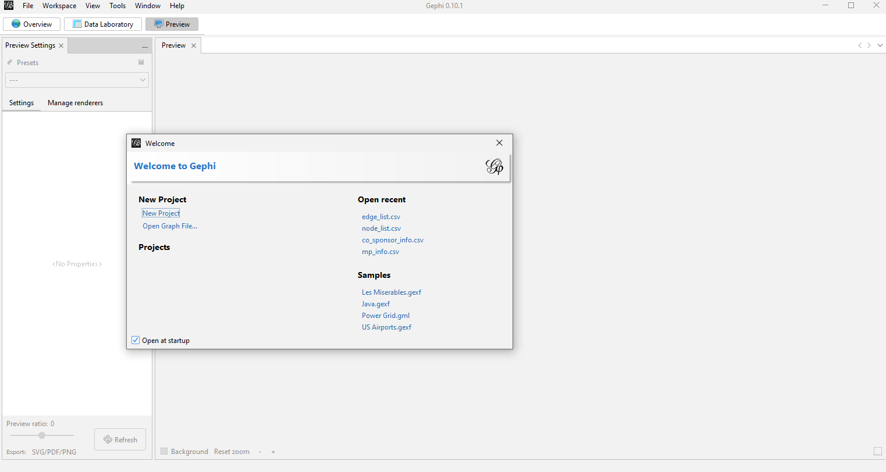
Click on ‘New Project’ to begin with. You’ll notice three buttons near the top of the screen: ‘Overview’, ‘Data laboratory’, and ‘Preview’. Clicking these will switch between different screens. The Overview screen will show a graphical overview of your network, once uploaded. We’ll go back to this one. The Data Laboratory screen is where you’ll upload and change the network data. The Preview screen will show a version of your network ready to export to an image file.
Upload the node list to gephi
The first step is to add the node list, which contains the information about the individual MPs. To upload data to gephi, switch to the ‘data laboratory’ view, and click the ‘import spreadsheet’ button.
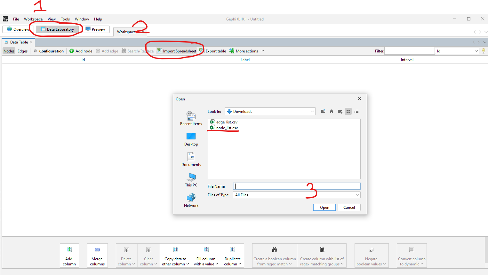
On the next screen (this will look a little different on Mac), go to the folder where you saved the two files, and open node_list.csv.
On the next screen, change the import type to ‘nodes table’, and click Next:
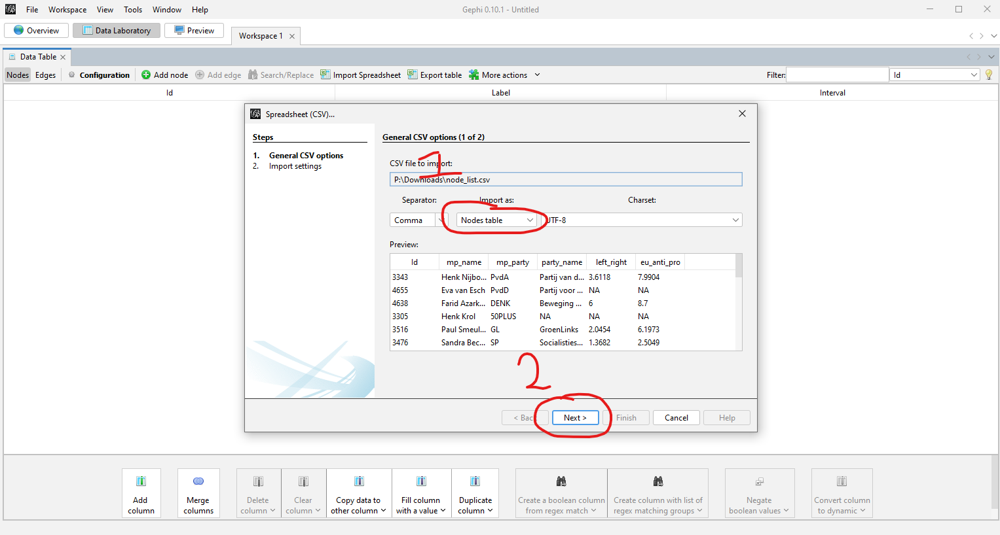
Here, you need to make two small adjustments before you move onto the next stage. The data left_right and eu_anti_pro are a number, from 0 to 10, measuring where on the political spectrum the party of this MP falls in these ways (0 is most left-wing and 10 most right, and 0 is most anti EU, and 10 most pro EU). However, because some values are NA, Gephi has interpreted these as a series of characters or ‘Strings’, rather than a number. Looking back to our first week, the best way to visualise this information is treating the value as ‘continuous’, meaning, for example, we could colour it with a lighter or darker hue depending on whether the party was strongly pro or strongly anti-EU.
To do this, we need to specify to Gephi that it should intepret these columns as numbers. On this page, each of the columns in the data are listed, along with a drop-down menu where we can choose to change the type of data value Gephi will use. Most of the time the default is fine, but in this case, click on the drop-downs under left_right and eu_anti_pro, and change them to ‘double’:
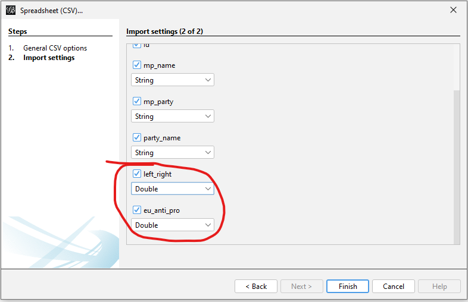
Click ‘Finish’, and you’ll get another screen. It will show some errors, which you can ignore. You should make one change here: change the option from ‘New workspace’ to ‘Append to existing workspace’:
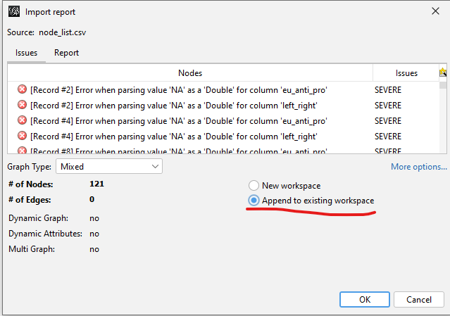
The data should now load into Gephi and look like this:
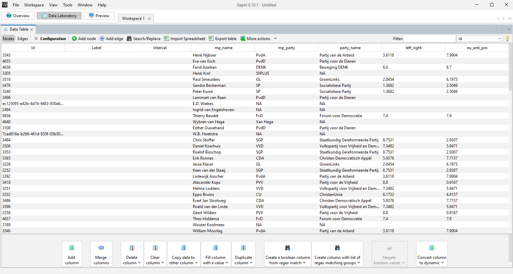
Copy the MP names to the label column
Before we move on, we need to make one further change to the node list. When visualising the network later, Gephi takes the node labels from the column called ‘Label’, which it has added automatically, and currently is empty. This should be filled with the ‘mp_name’ column in the data. To do this, click on the ‘copy data to other column’ button at the bottom of the screen, and select ‘mp_name’ from the list. A window will pop up asking you which column you want to copy the mp_name information to. If ‘label’ is not selected, select it here, and click OK.
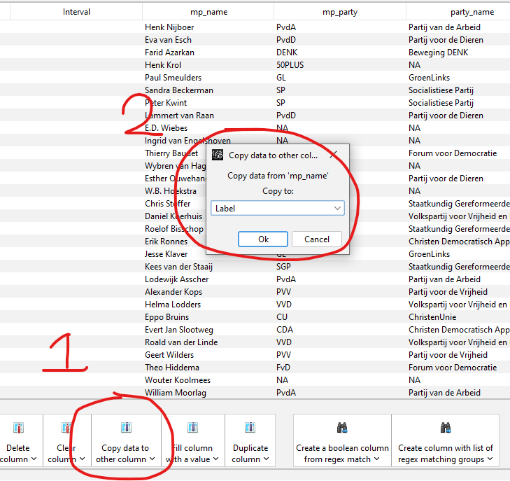
Upload the edge list to gephi
The next step is to upload the edge list - the list of connected MPs based on co-sponsored bills. Because we have prepared the data correctly, Gephi will automatically notice that it should be connected to the names and information in the nodes list.
As before, click on ‘Import spreadsheet’. Open the ‘edge_list.csv’ file on the next screen and click OK. This time, you don’t need to make any changes to the import settings, so click ‘Next’, and then ‘Finish’.
This next step is very important. As before, on the next window, change from ‘New Workspace’ to ‘Append to existing workspace’, in order for the edge list to be linked to your node list. That’s it: you’ve successfully imported the network, and now you can visualise it!
The Overview Screen
To work on visualising the network, click the Overview button to move to correct screen. You’ll see a series of connected points in the middle of the screen - this is the network with a random starting layour, and a pretty complicated looking set of options and buttons to choose from. At the top-left are a bunch of options for changing the size and colour of the nodes and edges. Underneath this are options to run a layout algorithm. On the right-hand side are some options to run statistics and find out more about your network.
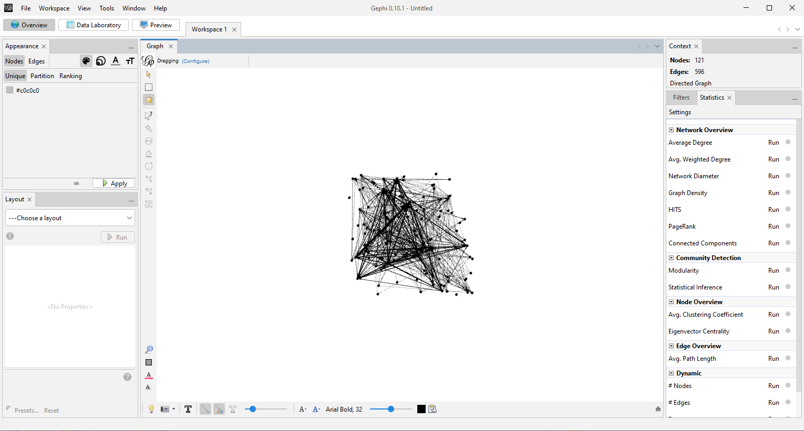
As it is, the network diagram is not much use. The position of the nodes is at random, so it doesn’t tell us anything about the structure of this network, and the nodes are all the same size and colour. We can use gephi options to make it much more informative. We’ll start by selecting and adjusting a layout algorithm which most clearly shows the structure, and then move on to labelling and colouring the nodes.
Choosing a layout algorithm
First, we’ll choose a layout algorithm. Layout algorithms generally try to place the nodes in a network in a way that reveals the structure of that network, usually using some kind of simulation of physical forces, such as gravity or springs. Gephi has a bunch of different ones to choose from. We’ll use ForceAtlas2, which often works well. Under the layout options, click on the drop-down menu and select ForceAtlas2 from the list.
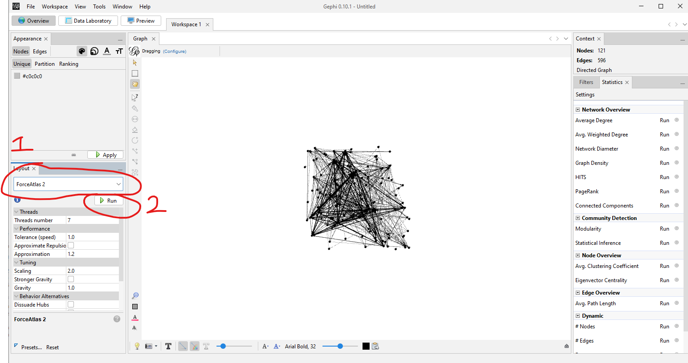
To see what it looks like with the default settings, click ‘Run’. This will repeatedly run the algorithm until you tell it to stop. Usually, you’ll want to click stop when it stops changing in shape (though it might still be moving, for example spinning in circles). The result will look something like this, which isn’t very readable:
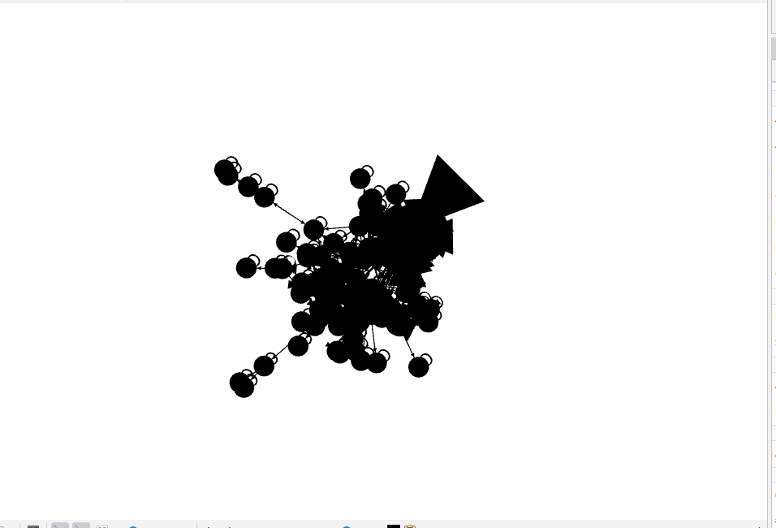
Adjust the layout algorithm to make it more readable
However, there are many options to choose from which can help to make it more readable. With your own network, the best thing to do is experiment and continually re-run the algorithm. Look for settings which allow you to determine differences in the shape and structure of the network, and make it less clustered and easier to read.
For this network, try the following settings.
First, select ‘LinLog mode’. This will exaggerate the differences between the nodes, spreading them out and making the clusters easier to see.
Change the ‘gravity’ setting from 1 to 3. At the default setting, unattached nodes (those who only co-sponsored themselves) disappeared. This brings them closer to the centre, so they are visible.
Click the ‘prevent overlap’ button. This adjusts the nodes slightly so they do not overlap with each other.
Change the ‘scaling’ option to 10, to further separate out the groups of nodes from each other.
You should now see something like this, which is not perfect but some structure does begin to emerge:
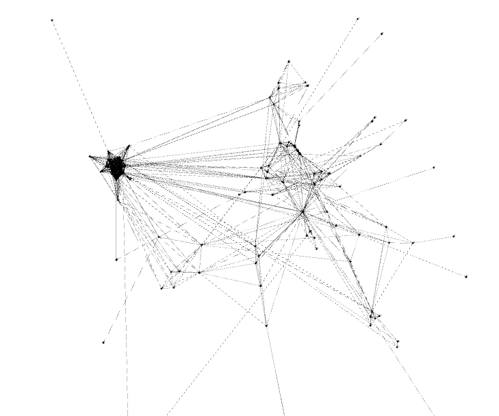
Add and adjust the labels.
Next, we would like to display the names of each of the nodes (MPs). To do this, click on the following icon:
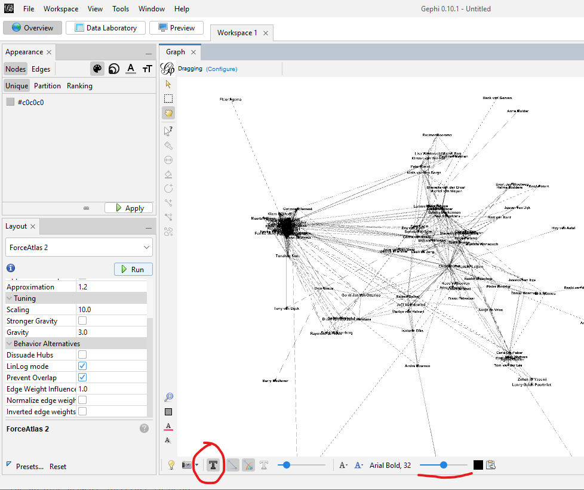
You will also see two sliders, to the right of this. The first one adjusts the thickness of the edges, and the second adjusts the size of the labels. Experiment with these until you get a useable size.
Many of the labels are unreadable because they are overlapping with each other. Gephi has an option to fix this. Click again on the layout drop-down, and select ‘Label adjust’ from the list. Click run - it will adjust the labels so they don’t overlap, and stop automatically. Now the network should be somewhat readable:
Color the nodes by party politics and/or party name.
At this point, we can see that the network has some kind of structure. There is a large cluster of connected MPs, a few smaller clusters, and a few outliers. But what connects them together? Do they form along party and political lines? We can use Gephi to colour the nodes by their attributes from the nodes_list table. We’ll try two options: first, colour the nodes by their party, and second, try a continuous colour, based on their party’s place on the left-right spectrum.
Colour by party
The options to colour nodes are at the top-left of the screen. This contains four icons: the first gives options for colouring nodes and edges, the second for sizing them, the third for colouring the labels, and the fourth for sizing the labels. Click on the painter palette if it is not already selected, and then the ‘Partition’ option. Click the drop-down menu and select ‘mp_party’. This will display a colour scheme:
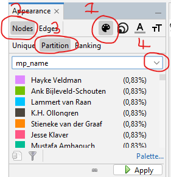
Click apply, and the nodes will change colour.
Colour by party position
We also have data on the position on the left-right spectrum for the party of each MP (not the individual MP views, unfortunately). We can try colouring the nodes by this value too. Click on the ‘ranking’ option, and select ‘left_right’. Click apply to apply the default colour scheme, which runs from light green (for most left wing) to dark green (most right wing). However, if you think back to the lecture on colour theory, you’ll remember that in a case like this, it is better to use a diverging colour palette, where most left wing will be one dark colour, those in the middle will have light colour, and most right-wing will have a different dark colour. To change the palette, click on the small icon to the right of the colour bar:
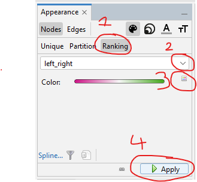
Notice that the palettes at the bottom consist of two colours with a light colour in the middle. Choose one of these, and apply it, which will colour the nodes by their party’s position:
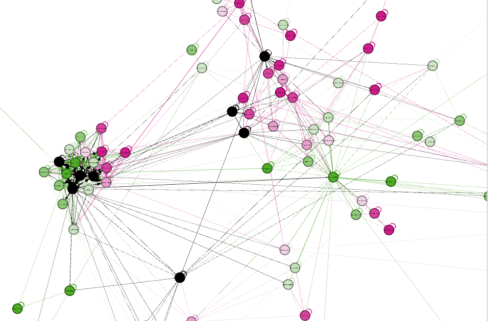
Calculate and look at network statistics
While we’re more interested in the visual aspects for this tutorial, Gephi also allows you to calculate a series of network measurements, such as finding the most important nodes. As a demonstration, we’ll calculate the ‘betweenness centrality’ scores for the nodes in the network, and then use this value to re-size the nodes.
Calculate scores
To do this, look to the ‘statistics’ tab on the right-hand side. The measurement we’re interested in is hidden under the ‘Network diameter’ option. Click on this, then in the next window, change the option from ‘directed’ to ‘undirected’ - as this particular network is undirected. Click OK, and you’ll get a series of graphs in a new window, which you can close.
Size by betweenness
Now, we can include this information in the network visualisation, by sizing the nodes according to their betweenness centrality score. Go back to the ‘appearance’ window in the top-left, and click on the size option, to the right of the palette. Next, click ‘ranking’, then choose betweenness centrality from the drop-down menu. Click apply. You can adjust the minimum and maximum sizes to make it easier to read, if you like.
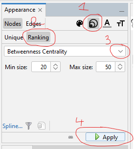
You can experiment with other measurements - which can also be set to colour values.
Preview and export
The last step is to create and export a publication-ready copy of your network.
This is done using the ‘Preview’ screen. Move to this by clicking on the button at the top of the screen. Here you can select a bunch of options for how you want the final version to look. Use the dropdown to select ‘Default straight’ to begin with, to draw the default version with straight rather than curved edges. Click ‘refresh’, to get a preview of the final file. If you’re happy with it, click export and save it as a .pdf, to be uploaded for this week’s assignment.
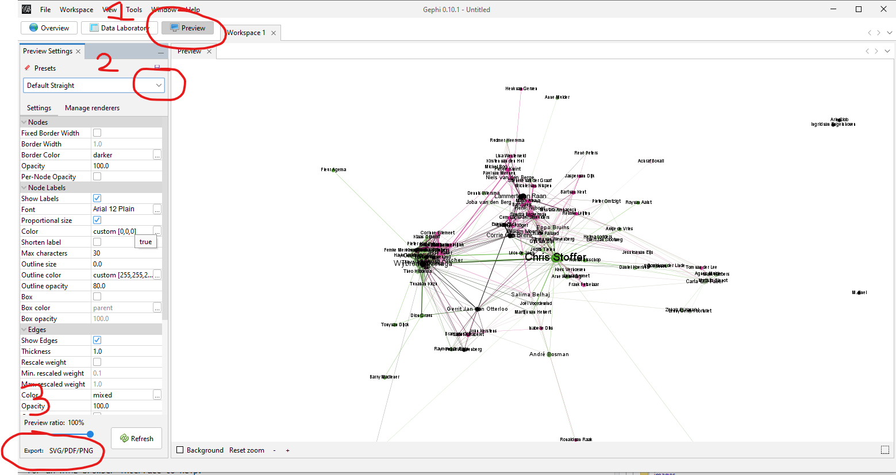
The final image should look something like the below. Feel free to adjust the options and layout to make it as readable as possible. For example, try following the instructions here: https://stackoverflow.com/questions/38975945/labels-only-for-nodes-with-a-minimal-weight-of-x-in-Gephi to hide some of the smaller labels.
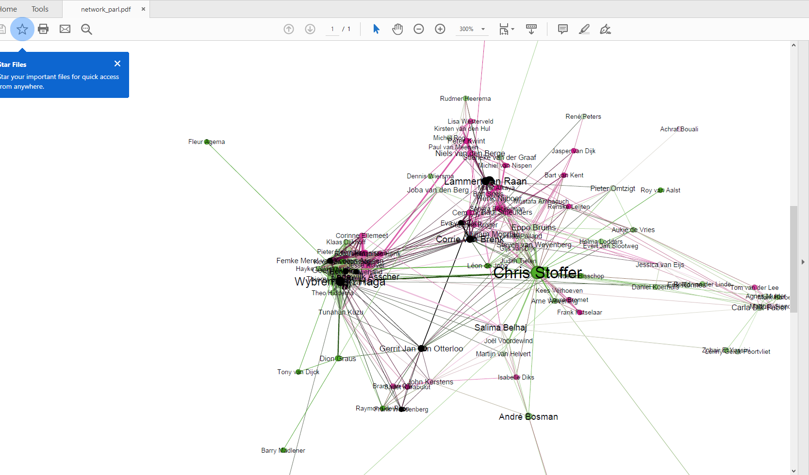
Create a network using Vistorian.net
If you can’t install Gephi, here is an alternative method to create a network, using an online application called The Vistorian. It is not as customisable as Gephi, but can create nice interactive graphs which are particularly useful for data exploration.
First, download these alternative versions of the files, in a slightly different format:
Go to https://vistorian.net/ in a browser, and click ’start my session.
On the next screen, click ‘Create network’, choose a name for it, and click Next.
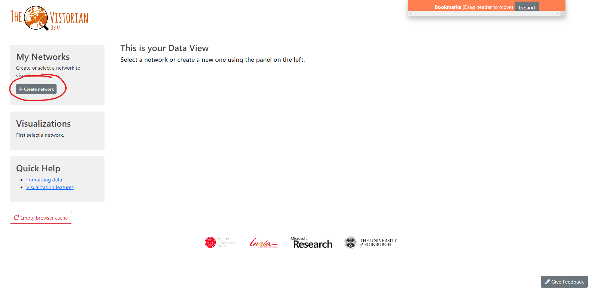
The Vistorian will ask a series of questions about your data. Click the correct option in each case, then hit Next to move on.
For ‘What is the Format of your data?’, select
- I have one or several files in a tabular format (e.g., spreadsheet, CSV, ...)
For How are links (edges) represented in your network?. select
- Link table: A table containing one row per link. Each row contains a pair of nodes that are linked
For Are Links Directed?, select No
Click on Upload a new file in the box, and upload the edge_list_v.csv file. Select the following options (see screenshot below):
Add a header row, by ticking the checkbox
Set the source and target labels to mp_1 and mp_2
Set the link weight to the weight column
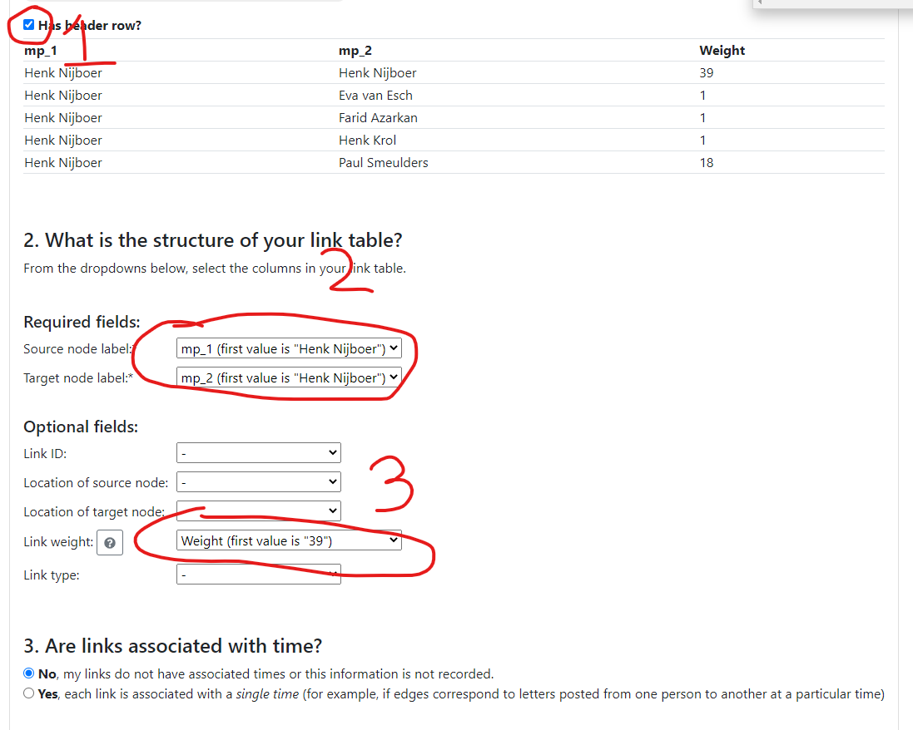
Hit next. On the next page, you’ll be asked if you have an additional node file. Click yes, and upload the node_list_v.csv file. Click to select a header row, set the node ID to name, and the Node Type to party_name.
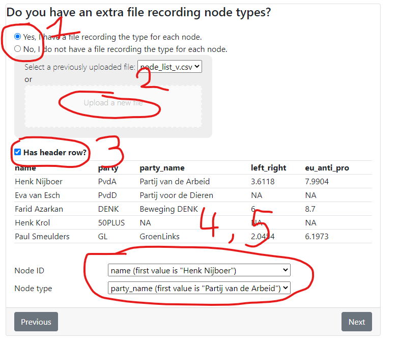
Hit next, and your data should be successfully loaded. You’ll see a number of options for network visualisations. Our data doesn’t have temporal or geographic data associated with it, so only the first two are relevant.
Start with the Node Link visualisation, and experiment with node and link attributes in order to make a readable and useable graph. When you’re done, take a screenshot and upload to the assignment area on Brightspace. It should hopefully look something like this:
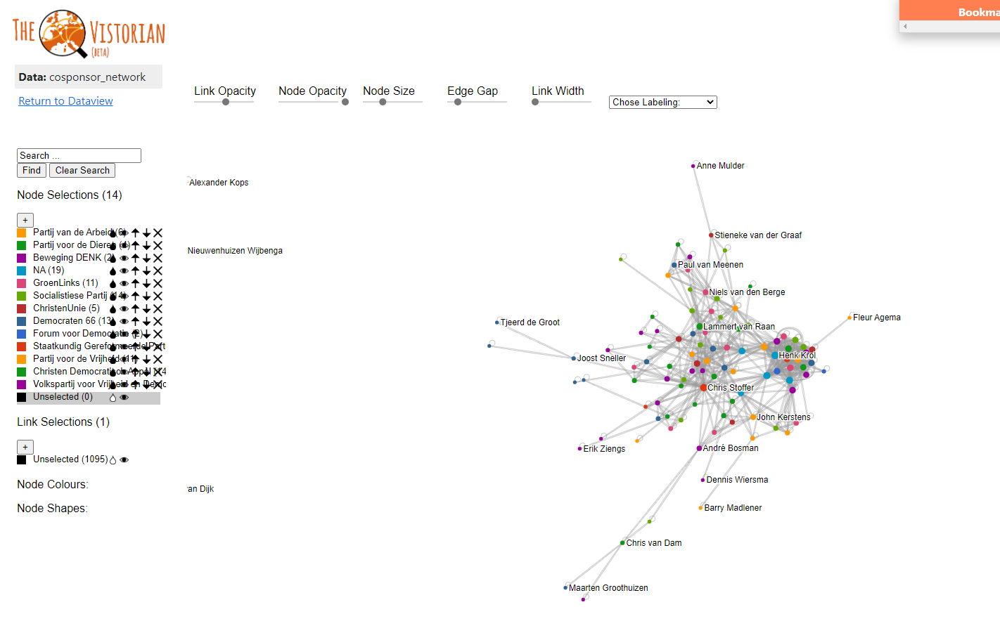